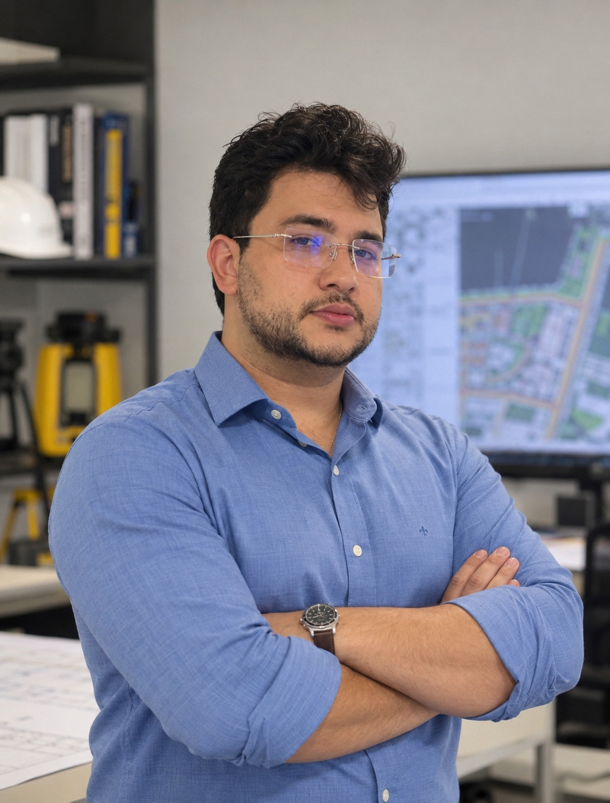

⌑
Orçamentos de obras e reformas
Planejamento de custos para você decidir com mais segurança antes de construir ou reformar.
Solicitar orçamento →Fortaleza-CE e Região Metropolitana
Projetos, orçamentos e laudos técnicos para obras, reformas e empresas. Atendimento objetivo, documentação bem feita e responsabilidade profissional.
Serviços
Escolha o que você precisa. O primeiro contato é simples e sem compromisso.
Planejamento de custos para você decidir com mais segurança antes de construir ou reformar.
Solicitar orçamento →Estudos e projetos que unem organização dos espaços, viabilidade e clareza para a execução.
Solicitar orçamento →Documentação técnica integrada para orientar sua obra com compatibilização e responsabilidade.
Solicitar orçamento →Inspeção e laudo do Sistema de Proteção contra Descargas Atmosféricas.
Solicitar orçamento →Medição, análise técnica e documentação para sistemas de aterramento.
Solicitar orçamento →Ensaio de campo para apoiar o dimensionamento e a avaliação técnica de aterramentos.
Solicitar orçamento →Como funciona
Você explica a necessidade e recebe uma orientação inicial para avançar com clareza.
Enviar mensagem agora →Envie sua demanda, cidade e, se possível, fotos ou documentos pelo WhatsApp.
Analisamos o escopo necessário e informamos os próximos passos.
Com proposta clara, o trabalho segue com responsabilidade técnica.

Quem sou eu
Atuo com projetos, orçamentos, laudos e soluções técnicas para obras, reformas e empresas em Fortaleza-CE e região metropolitana.
Meu trabalho é transformar necessidades técnicas em entregas claras, responsáveis e adequadas à realidade de cada cliente.
Por que contratar
Do primeiro contato à entrega técnica, cada etapa é conduzida com clareza, responsabilidade e organização.
Você entende o escopo do serviço, os documentos necessários e os próximos passos antes de iniciar.
Projetos, orçamentos e laudos organizados para apoiar sua obra, empresa ou processo de regularização.
Serviços em Fortaleza-CE e Região Metropolitana, com comunicação direta durante o atendimento.
Vamos conversar
Envie uma mensagem e descreva sua necessidade. Atendimento em Fortaleza-CE e região metropolitana.